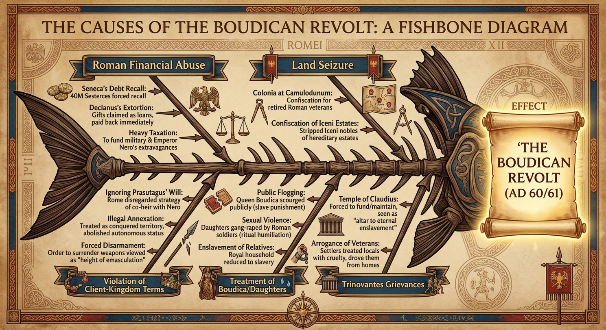

Lesson 7
Why did Boudicca’s revolt erupt with such devastating force in AD 60–61? Was it a spontaneous explosion of fury, or a carefully planned campaign of resistance?
~28 min
AH11-2: Proposes ideas about the varying causes and effects of events and developments
AH11-3: Analyses the role of historical features, individuals and groups in shaping the past
AH11-6: Analyses and interprets different types of sources for evidence to support an historical account or argument
To identify and analyse both the immediate and the deeper structural causes of Boudicca’s revolt, and to evaluate the extent to which the revolt was spontaneous or organised.
0 of 4 criteria met
By the end of this lesson, I can:
Teacher — Sharing LISC
Display the learning intention and success criteria on the board. Ask students to identify the key verbs (distinguish, explain, evaluate, assess). Check understanding: “What is the difference between an ‘immediate’ cause and an ‘underlying’ cause? Can someone give me a modern example?” (cold call).
In Lessons 5 and 6, we studied the two ancient historians who wrote about Boudicca — Tacitus and Cassius Dio. Both described the events that triggered the revolt. Today we analyse those causes in detail.
What do you remember about what triggered Boudicca’s revolt?
Teacher — Retrieval Practice
Use cold call to ask 3–4 students what they remember from the Tacitus source extract about the causes of the revolt. Key points to elicit: Prasutagus’s will was ignored, Boudicca was flogged, her daughters were assaulted, Iceni lands were confiscated.
Retrieval check: “True or false: The revolt was triggered by the Roman invasion of Britain. Thumbs up for true, down for false.” (Answer: false — the invasion was in AD 43, but the revolt was triggered by the treatment of Boudicca and the Iceni after Prasutagus’s death in AD 60.) If fewer than 80% correct, recap the immediate triggers before proceeding.
Teacher — Modelling (‘I Do’)
Use an everyday analogy before reading the text: “Think about a bushfire. The immediate cause might be a lightning strike — but the underlying cause is months of drought and dry fuel. Without both, the fire doesn’t happen. Historical events work the same way.”
Read the introductory paragraph aloud, then pause to check understanding before continuing.
Historical events rarely have a single cause. To understand why Boudicca’s revolt erupted with such devastating force, we need to distinguish between immediate triggers (the specific events that “lit the fuse”) and underlying structural causes (the long-term conditions that created a situation ready to explode). Both types of cause are necessary to explain why the revolt happened when and how it did.

The immediate triggers for the revolt were the events following the death of Prasutagus in AD 60. These were not simply unfortunate administrative errors — they were a systematic pattern of abuse that left the Iceni leadership with no alternative but armed revolt.
| Event | What Happened |
|---|---|
| Annexation of Iceni kingdom | Rome ignored Prasutagus’s will and annexed the entire Iceni kingdom as if it were conquered territory, abolishing the client kingdom entirely. |
| Property confiscation | Iceni nobles were stripped of their ancestral estates. Roman officials — centurions and slaves acting on official orders — looted the royal household. |
| Flogging of Boudicca | Boudicca was publicly flogged (a punishment used for slaves and criminals), destroying her status and publicly humiliating the entire tribe. |
| Assault on daughters | Boudicca’s daughters were sexually assaulted by Roman soldiers — an act that, in Celtic honour-culture, destroyed the family’s dignity and demanded violent restitution. |
| Debt collection | Roman financiers simultaneously called in loans to Iceni nobles, creating economic catastrophe for families already stripped of their land and property. |
Teacher — CFU
Use cold call. If fewer than 80% answer correctly, re-teach by explaining the Roman social hierarchy and what flogging signified.
Why was the public flogging of Boudicca particularly significant as a cause of the revolt?
Teacher — Guided Reading (‘We Do’)
Have students read this section silently. Then use think-pair-share: “Turn to your partner and discuss: Which underlying cause do you think was most important, and why?” (60 seconds). Cold call 2–3 pairs.
These immediate triggers were explosive only because of decades of accumulated resentment. The underlying causes of the revolt stretched back to the conquest itself and beyond.
Land Seizures
The veteran colony at Camulodunum had dispossessed the Trinovantes of their ancestral lands. Similar, if smaller-scale, land confiscations had occurred throughout the newly conquered territories.
Financial Exploitation
Roman tax collection, loan practices, and economic extraction created chronic hardship for tribal elites who had expected a partnership, not subordination.
Religious Suppression
The destruction of Druidic centres and the imposition of the Imperial Cult represented a direct attack on Celtic spiritual and intellectual life.
Cultural Humiliation
The systematic replacement of tribal laws, customs, and leadership structures with Roman alternatives denied Celtic peoples their identity.
Broken Promises
The client-kingdom system had promised a degree of self-determination that Roman practice consistently violated. The Iceni were not the first tribe to discover this betrayal.
Which of the following best describes an ‘underlying cause’ of the revolt?
Classify each cause as “Immediate” or “Underlying”:
Teacher — Scaffolding (‘We Do’)
Ask students: “Why is it significant that the Trinovantes joined the revolt, given that they had previously been Roman allies?” Use think-pair-share (60 seconds), then cold call 2–3 pairs. Guide them toward the idea that even Rome’s friends had been pushed beyond endurance.
The Trinovantes were a Celtic tribe of south-eastern Britain who had previously been allies of Rome — they had welcomed Caesar during his expeditions and had initially cooperated with the Claudian conquest. Their support for Boudicca was therefore particularly significant: it demonstrated that even Rome’s former friends had been pushed beyond endurance.
The Trinovantes’s grievances were specific and material. Their territory had been seized to create the veteran colony at Camulodunum, and they were forced to fund and maintain the Temple of Claudius — an ongoing financial burden and religious insult. Veterans treated the local population as conquered enemies, commandeering labour and property with impunity. The Trinovantes joined the revolt not out of cultural solidarity with the Iceni but out of their own unbearable experience of Roman colonialism.
Their involvement transformed what might have been a localised Iceni uprising into a regional coalition. Tacitus’s phrase — the Trinovantes “and others who had agreed by secret conspiracies to reassert their freedom” — suggests a level of prior coordination between tribes that argues against the revolt being entirely spontaneous.
PRIMARY SOURCE — Tacitus, Annals, Book XIV, Chapter 31. Written c. AD 98. This passage describes the Trinovantes’ reasons for joining the revolt.
“The Trinobantes and others who had not yet been broken in by subjugation had agreed by secret conspiracies to reassert their freedom. Their most bitter hatred was against the veterans; who, settled as they lately were in the colony of Camulodunum, were driving people from their homes, ejecting them from their lands, calling them captives and slaves, and abetted in their insolence by the soldiers… The temple erected to the Divine Claudius was a blatant stronghold of alien domination, and the priests chosen to serve it were bound, under the pretext of religion, to pour out their fortunes like water.”
By now you should be able to identify Origin, Value, and Purpose independently. Focus on the harder skills:
Teacher — CFU
Gesture voting: “Hold up A, B, C, or D with your fingers. On three — one, two, three — show me.” If fewer than 80% show C, re-read the relevant paragraph together.
Why did the Trinovantes join Boudicca’s revolt?
Teacher — Structured Debate (‘We Do’)
Divide the class into two groups. One argues for pre-planning, the other for spontaneity. Each group has 3 minutes to prepare using the evidence table, then 2 minutes to present. Close with cold call — select 2–3 students from each side: “Name one specific piece of evidence from the table that your side used.” Allow 5+ seconds wait time. This requires articulation, not a quick binary vote.
Historians debate whether Boudicca’s revolt was a spontaneous eruption of fury or a pre-planned, coordinated military campaign. The evidence points in both directions.
| Evidence for Pre-Planning | Evidence for Spontaneity |
|---|---|
| Tacitus mentions “secret conspiracies” between tribes — suggesting prior coordination. | The immediate trigger (Boudicca’s flogging) created an emotional crisis that drove immediate action. |
| The revolt struck multiple targets in rapid succession — Camulodunum, Londinium, Verulamium — suggesting logistical preparation. | The attack on Verulamium — a tribe that had partially cooperated with Rome — suggests the revolt grew beyond its original target list. |
| Assembling a force reportedly numbering in the tens of thousands required advance planning for supplies, communication, and coordination. | The army’s lack of supply lines and inability to sustain a prolonged campaign suggests limited long-term planning. |
| The choice of targets (the veteran colony, the trade hub, the Romanised tribal capital) suggests strategic intent. | The catastrophic tactical error at the final battle — positioning wagons to block retreat — suggests tactical naivety inconsistent with professional military planning. |
Which piece of evidence most strongly suggests the revolt involved pre-planning?
Teacher — Discussion (‘We Do’)
This is a sophisticated historiographical concept. Use think-pair-share for the key question: “Was the revolt Boudicca’s personal achievement, or would it have happened without her?” Allow 90 seconds for pair discussion, then cold call 3 pairs. Guide students toward the nuanced answer: both factors are necessary.
The debate over spontaneity versus planning also connects to a larger historical question: how much did individual agency (Boudicca’s leadership decisions) matter compared to structural forces (the underlying conditions of colonial oppression)?
On one hand, without the specific provocation of Boudicca’s personal humiliation — the flogging, the assault on her daughters — the revolt might never have ignited at all. Her leadership, her ability to channel tribal anger into coordinated military action, and her personal authority as a wronged queen were essential. On the other hand, the conditions for revolt had been building for nearly twenty years. Someone, eventually, would have been the catalyst.
Modern historians like Richard Hingley and Christina Unwin argue that Boudicca’s revolt is best understood as a colonial resistance movement — structured by the same forces that drove similar movements in other colonised societies throughout history — in which individual leadership channelled collective grievance into action. The personal and the structural cannot be separated.
SECONDARY SOURCE — Richard Hingley and Christina Unwin, Boudicca: Iron Age Warrior Queen (2005), Hambledon and London. This is a scholarly secondary source re-evaluating Boudicca’s revolt through the lens of colonial resistance studies. The passage below is paraphrased.
Hingley and Unwin (2005) argue that the revolt of AD 60–61 cannot be reduced to a single act of Roman injustice against Boudicca and her daughters. In their view, the uprising was the product of nearly two decades of Roman economic exploitation, cultural suppression, and political betrayal stretching back to the Claudian conquest of AD 43. While Boudicca’s personal suffering provided the immediate trigger, the deeper conditions for revolt had been accumulating long before her flogging — and it was this broader pattern of colonial grievance that transformed a dynastic dispute into a mass uprising.
Hingley and Unwin (2005) argue that Boudicca’s revolt is best understood as:
Choose the level that challenges you, or work through all three.
Teacher — Independent Practice (‘You Do’)
Students should attempt these only after a high success rate on the CFU questions. Direct all students to Foundation first.
Exit ticket: Students answer Foundation Q3 on a sticky note before leaving: “What is the difference between an immediate cause and an underlying cause?”
Identify and describe
Analyse and explain
Evaluate and debate
Click each card to reveal its definition.
Return to the success criteria from the start of this lesson. Can you now tick off each one? If any remain unticked, scroll back and review the relevant section.
Teacher — Review of Learning
Self-assessment for each criterion: “Thumbs up if confident, sideways if partly there, down if you need more help.”
Exit ticket: “On a sticky note, name one immediate cause and one underlying cause of the revolt.” Collect as students leave.
How confident do you feel about this lesson’s content?